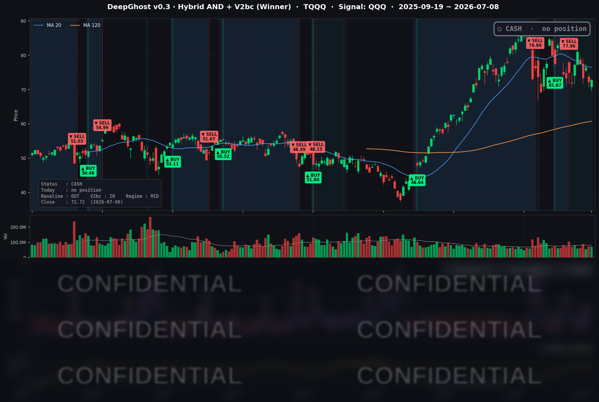

👻 매일 시그널과 히스토리를 홈페이지에서 한눈에 → www.ghostai.co.kr
호르무즈 해협 긴장으로 인하여 10년물 국채금리가 4.5%를 훌쩍 올랐습니다. 오늘 나스닥은 분명히 떨어졌어야 했습니다. 하지만 반도체 기술적 반등으로 인하여 버텼습니다.
불안함과 리스크는 여전히 높습니다. 리스크가 해소되고 추세 전환되는 걸보고 들어가도 늦지 않습니다. 우리는 그 시점을 기다리고 있습니다.
📊 오늘의 매매 신호
| 항목 | 내용 |
|---|---|
| 오늘 할 일 | ✅ 아무것도 안 해도 됩니다 |
| 포지션 상태 | 💵 현금 보유 중 (OUT OF POSITION) |
| 현금 보유 기간 | 2026-06-25 ~ 2026-07-08 (13일) |
| TQQQ 종가 | $72.72 (+0.68%) |
표면적으로는 강 보합에 머물렀지만, 오늘은 크게 떨어졌어야하는 매크로 장세입니다. 시장이 두가지 이유로 버텼는데요.
첫번째는 반도체 주식의 기술적 반등, 두번째는 국채 금리가 급등하면 트럼프 행정부에서 완화 시그널을 분명히 줄거라는 기대. 즉, 이란과 평화 합의를 서두른다거나 하는 "TACO" 입니다.
본질로 버틴 시장이 아니니 더욱더 조심해야겠습니다.
TQQQ 시그널 — OUT OF POSITION
현재 상태: 현금 보유 중 | 6/25 매도 이후 관망 지속

오늘 나스닥은 소폭 올랐지만(QQQ +0.28%, TQQQ +0.68%), 모델의 레버리지 나스닥(TQQQ) 트랙은 여전히 현금 상태를 유지했습니다.
시장 전반은 금리 상승, 유가 6%대 급등, 연준 의사록의 매파 톤이라는 세가지 역풍을 맞고 있었고, 이런 국면에서 추격 매수하는 것은 리스크 대비 매력이 낮습니다. 모델이 좁은 반등을 뒤늦게 쫓기보다 현금을 지킨 것은, "뒷북 추격을 배제한다"는 설계와 일치합니다.
오늘 미국 시장 — 시황 요약
지수 마감
| 지수 | 종가 | 등락률 |
|---|---|---|
| S&P 500 | 7,482.71 | -0.28% |
| Nasdaq Composite | 25,870.65 | +0.20% |
| Dow Jones | 52,348.39 | -1.09% |
| Russell 2000 | 2,956.39 | -0.88% |
기술주 지수(나스닥)만 겨우 플러스였고, 다우·소형주·S&P는 모두 뒷걸음질쳤습니다. 반도체와 에너지의 강세가 나스닥을 방어했지만, 오르는 종목의 폭 자체는 좁았던 하루입니다. 특히 다우(-1.09%)가 가장 약했는데, 경기·산업 비중이 큰 만큼 금리 상승과 유가 급등에 가장 민감하게 반응했습니다.
국채 금리 동향
| 만기 | 수익률 | 전일 대비 |
|---|---|---|
| 3개월 | 3.723% | -0.2bp |
| 5년 | 4.308% | +5.1bp |
| 10년 | 4.569% | +4.0bp |
| 30년 | 5.065% | +2.2bp |
단기(3개월)는 사실상 고정된 반면, 중기(5년 +5.1bp)가 가장 크게 튀어 오른 커브 중간이 눌리는 흐름이 나타났습니다. 연준의 매파적 의사록으로 연내 금리 인하 기대가 후퇴하면서 중기 금리가 밀려 올라간 것입니다. 장단기 금리는 정상 우상향(10년-3개월 +84.6bp)을 유지해, 침체를 알리는 역전 신호는 없습니다.
연준 발언 & 금리 패스
7월 8일 오후 공개된 6월 FOMC 의사록이 이날 최대 이벤트였습니다. 기준금리는 3.50-3.75%로 만장일치 동결됐지만, 일부 위원이 오히려 금리 인상 필요성을 제기한 사실이 드러나며 위원회가 첨예하게 갈렸음이 확인됐습니다. 인플레이션 위험은 여전히 상방으로 판단됐고, 관세·에너지·AI 인프라 수요가 물가를 끈적하게 유지시킬 요인으로 지목됐습니다. 시장은 이를 매파적으로 받아들여 "가까운 시일 내 인하는 없다"는 쪽으로 기울었습니다.
오늘의 핵심 이슈
- 연준 6월 의사록 = 매파 분열 확인 — 일부 위원의 인상론과 상방 인플레 위험이 확인되며 연내 인하 기대가 후퇴, 중기 금리가 오르고 소형주·다우가 눌렸습니다.
- 미·이란 긴장 재점화로 유가 6%대 급등 — 미·이란 양해각서 종료 선언과 호르무즈 해협 리스크가 부각되며 WTI +5.89%($74.59), Brent +6.46%($78.95). 에너지가 이날 유일하게 확실한 강세 섹터였습니다.
- 애플-브로드컴 AI 칩 딜 — 브로드컴이 애플과 약 300억 달러 규모의 멀티이어 AI 칩 계약 소식에 +4.83% 급등, 반도체 전반의 반등을 이끌며 나스닥을 방어했습니다.
변동성 & 투자심리
- VIX: 16.90 (+4.77%) — 절대 수준은 여전히 낮지만(20 아래), 유가 급등과 매파 의사록에 경계감이 유입되며 소폭 반등했습니다.
- 공포탐욕지수(CNN): 43.46 — "공포(Fear)" 구간. 다우·소형주 하락, 유가 상승, VIX 반등과 맞물린 방어적 심리를 그대로 보여줍니다.
매크로 & 원자재
미·이란 긴장이 유가 급등의 직접 트리거였습니다. WTI $74.59(+5.89%), Brent $78.95(+6.46%)로 지정학 프리미엄이 원유로 집중된 반면, 금은 $4,088.30(-1.38%)으로 금리·달러 강세에 눌렸습니다. 유가가 오르면 인플레 우려가 커지고, 이는 다시 연준의 "장기 고금리" 서사를 강화하는 구조가 반복되고 있습니다.
주요 종목 동향
| 종목 | 전일 종가 | 당일 종가 | 등락률 | 비고 |
|---|---|---|---|---|
| AVGO | 370.78 | 388.69 | +4.83% | 애플과 약 300억달러 AI 칩 딜 소식, 당일 최대 상승 |
| NVDA | 196.93 | 204.12 | +3.65% | 반도체 동반 강세, AI 칩 수요 서사 재부각 |
| QCOM | 182.97 | 186.56 | +1.96% | 반도체 강세 동참 |
| MU | 938.38 | 948.80 | +1.11% | 메모리 강세, AI 인프라 수요 수혜 |
| AAPL | 310.66 | 313.39 | +0.88% | 브로드컴 딜의 발주처로 부각, 완만한 반등 |
| INTC | 110.39 | 110.24 | -0.14% | 전일 급락 후 하락 진정, 사실상 보합 |
| NFLX | 76.18 | 75.59 | -0.77% | 성장주 되돌림 |
| AMZN | 245.98 | 243.62 | -0.96% | AI 데이터센터 지출 경계, 하이퍼스케일러 약세 |
| GOOGL | 367.03 | 361.92 | -1.39% | 데이터센터 지출 경계, 대형 소프트 약세 |
| MSFT | 388.84 | 383.34 | -1.41% | AI 인프라 지출 우려, 하이퍼스케일러 약세 |
| META | 615.58 | 603.12 | -2.02% | 소셜·광고 성장주 약세 |
| TSLA | 402.90 | 394.06 | -2.19% | 당일 최대 하락, 성장주 되돌림·금리 부담 |
이날 시장 이야기는 빅테크 내부의 로테이션이었습니다. "AI 반도체 수요는 좋다"는 서사가 반도체(AVGO·NVDA·QCOM·MU)를 끌어올린 반면, "AI 인프라 지출은 비용 부담"이라는 서사가 하이퍼스케일러(MSFT·GOOGL·AMZN)와 대형 성장주를 눌렀습니다. 같은 AI라는 테마 안에서 정반대 방향의 힘이 동시에 작동한, 흥미로운 하루였습니다.
Ghost.AI — Quantitative AI Investment
Model: DeepGhost v0.3 | Transformer-Based Deep Learning
Coverage: 13 tickers | Updated every trading day after US market close
⚠️ 본 자료는 정보 제공 목적으로만 작성되었으며 투자 권유가 아닙니다. 모든 투자의 책임은 투자자 본인에게 있습니다. 과거 성과가 미래 수익을 보장하지 않습니다.
[유의사항]
- 본 서비스는 불특정 다수를 대상으로 발행되는 단방향 정보 제공 서비스이며, 투자자 개인의 재산 상황·투자 목적·위험 선호도를 반영한 개별 투자 조언이 아닙니다.
- 고스트에이아이 주식회사는 고객과 쌍방향 의사소통(개별 상담, 맞춤형 자문 등)을 제공하지 않습니다.
- 본 콘텐츠는 투자 권유 또는 매매 주문의 청약·청약의 권유에 해당하지 않으며, 최종 투자 판단 및 그에 따른 손익의 책임은 전적으로 투자자 본인에게 있습니다.
고스트에이아이 주식회사